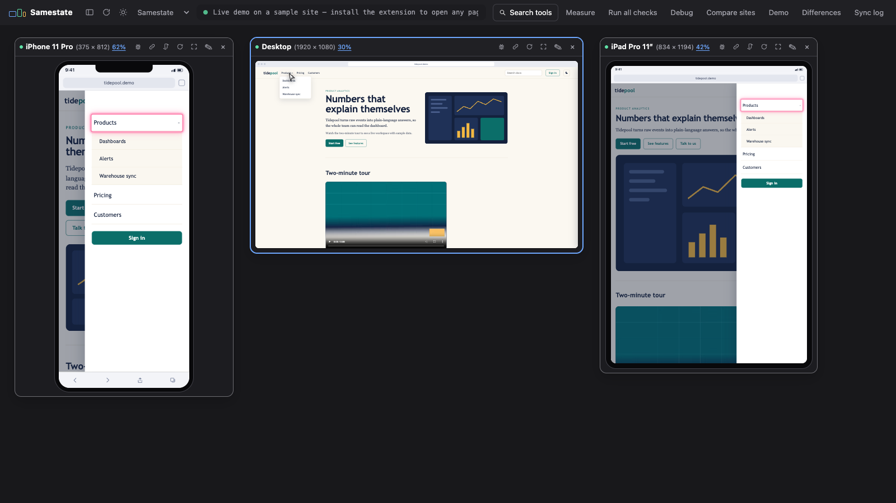

Samestate
Every screen.
One shared
state.
Test together. Measure what matters.
Hear how every tool works.
46 narrated steps
Measurements & checks
Voice help
shouvik12.github.io/samestate
Samestate · Zinc
